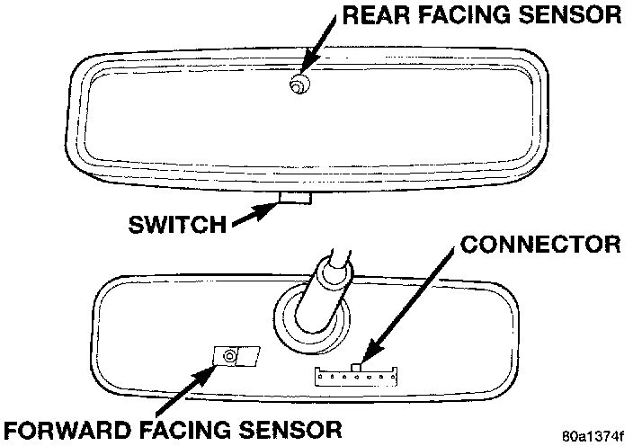

Automatic Day/Night Mirror
1. Check the fuse in the junction block. If OK, go to Step 2. If not OK, replace the faulty fuse.
2. Turn the ignition switch to the On position. Check for battery voltage at the fuse in the junction block. If OK, go to Step 3. If not OK, repair the open circuit to the ignition switch as required.
Automatic Day/Night Mirror:

3. Unplug the wire harness connector from the mirror. Check for battery voltage at the fused ignition switch output circuit cavity of the mirror wire harness connector. If OK, go to Step 4. If not OK, repair the open circuit to the junction block as required.
4. Turn the ignition switch to the Off position. Check for continuity between the ground circuit cavity of the mirror wire harness connector and a good ground. There should be continuity If OK, go to Step 5. If not OK, repair the circuit to ground as required.
5. Turn the ignition switch to the On position. Set the parking brake. Place the transmission gear selector lever in the Reverse position. Check for battery voltage at the backup lamp switch output circuit cavity of the mirror wire harness connector. If OK, plug in the mirror wire harness connector and go to Step 6. If not OK, repair the open circuit as required.
6. Place the transmission gear selector lever in the Neutral position. Place the mirror switch in the On (LED in the switch is lighted) position. Cover the forward facing ambient photocell sensor to keep out any ambient light.
NOTE: The ambient photocell sensor must be covered completely, so that no light reaches the sensor. Use a finger pressed tightly against the sensor, or cover the sensor completely with electrical tape.
7. Shine a light into the rearward facing headlamp photocell sensor. The mirror should darken. If OK, go to Step 8. If not OK, replace the faulty mirror unit.
8. With the mirror darkened, place the transmission gear selector lever in the Reverse position. The mirror should return to its normal reflectance. If not OK, replace the faulty mirror unit.